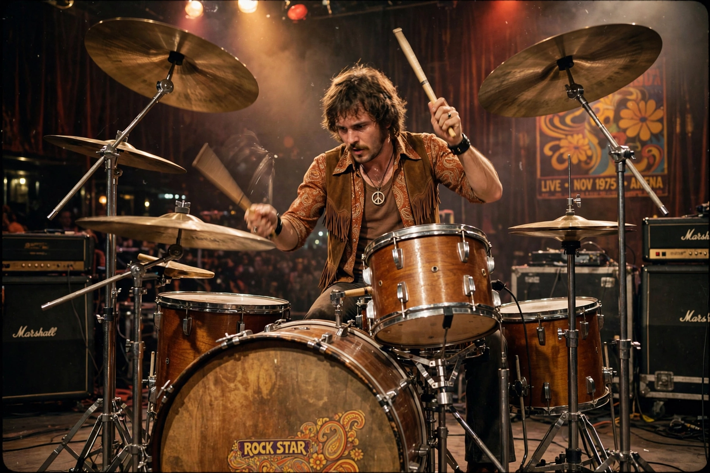

| Bill Ward | |
|---|---|
 | |
| Born | William Thomas Ward, 5 May 1948, Aston, Birmingham, England |
| Occupation | Musician, songwriter |
| Instruments | Drums, percussion, vocals |
| Years active | 1966–2012, 2025 |
| Associated acts | Black Sabbath, Ward One, Day of Errors |
William Thomas Ward (born 5 May 1948) is an English musician, the original drummer of the heavy metal band Black Sabbath. His swing-influenced, jazz-tinged drumming — powerful behind the beat yet full of fills — helped define the sound of early heavy metal on albums such as Paranoid (1970) and Master of Reality (1971).
Ward played with guitarist Tony Iommi in the band Mythology before forming the Polka Tulk Blues Band, and then Black Sabbath, with Ozzy Osbourne and bassist/lyricist Geezer Butler. Ward sang lead vocals on a few Sabbath songs, including "It's Alright" from Technical Ecstasy (1976) and "Swinging the Chain" from Never Say Die! (1978). Health problems and internal disputes led to absences in the 1980s, but he returned for the original line-up reunions of 1997–2005 and contributed to live albums and tours.
A contractual dispute kept Ward out of the band's final album 13 (2013) and farewell tour; he released solo albums Ward One: Along the Way (1990) and Accountable Beasts (2015) and led the band Day of Errors. In July 2025 he rejoined Black Sabbath's original line-up for the "Back to the Beginning" farewell concert in Birmingham. Ward is frequently ranked among the greatest rock drummers of all time.
Geezer Butler · Black Sabbath · Heavy metal music
From Wikipedia, the free encyclopedia (recreated from memory).